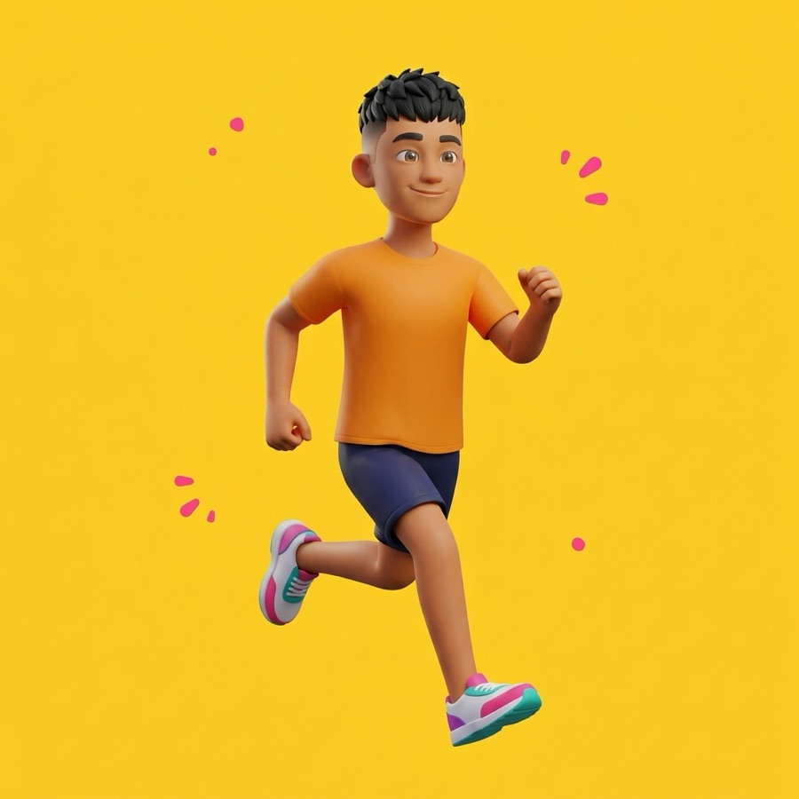
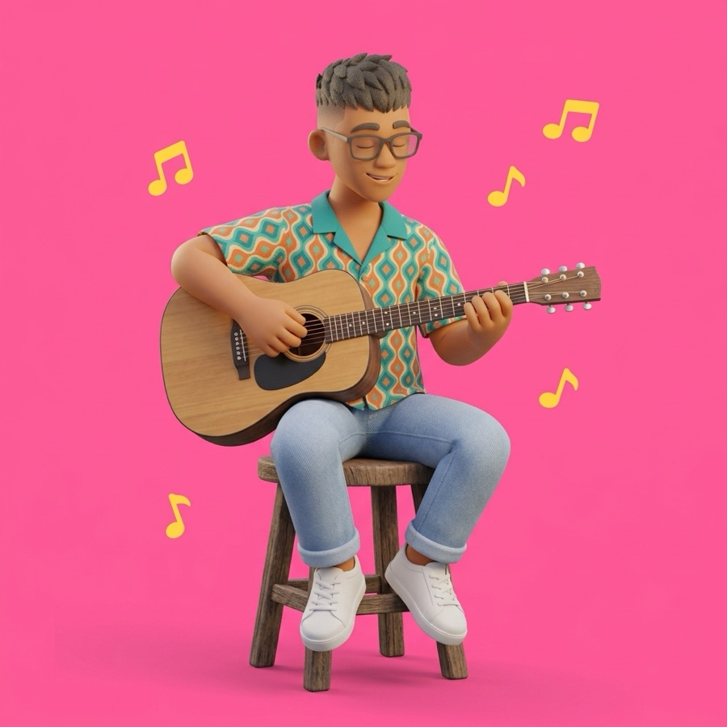
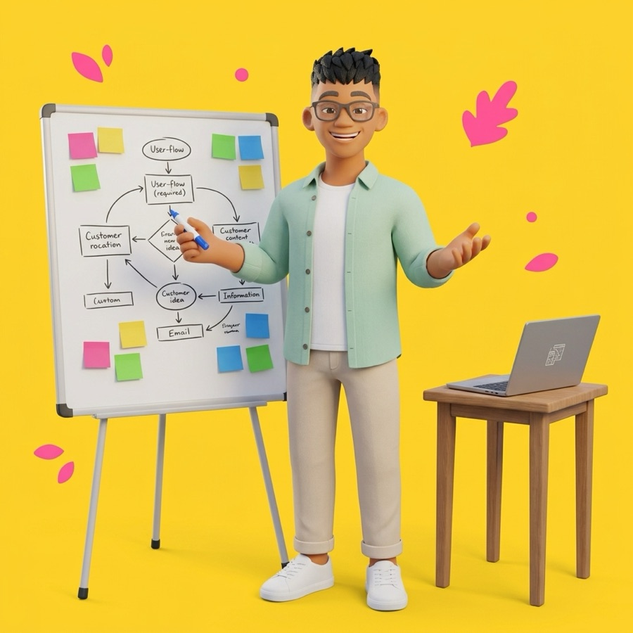
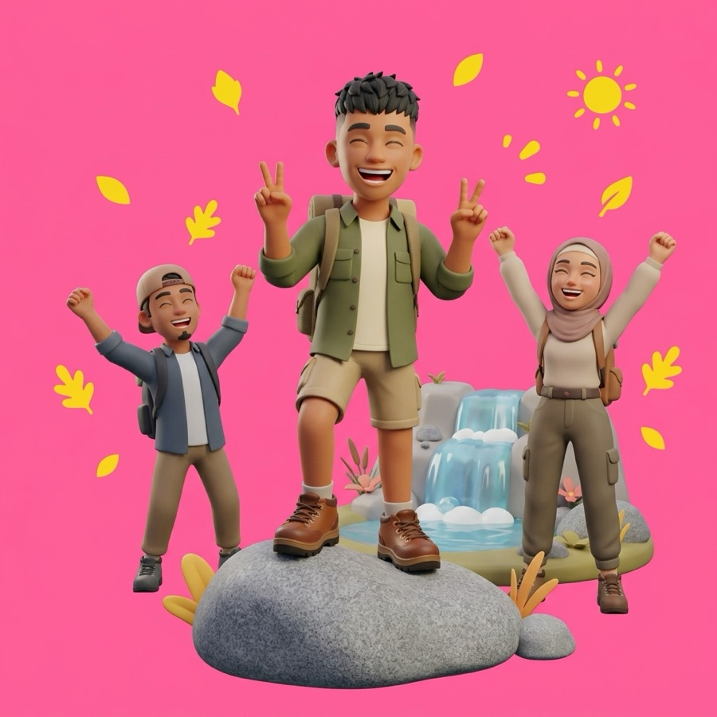
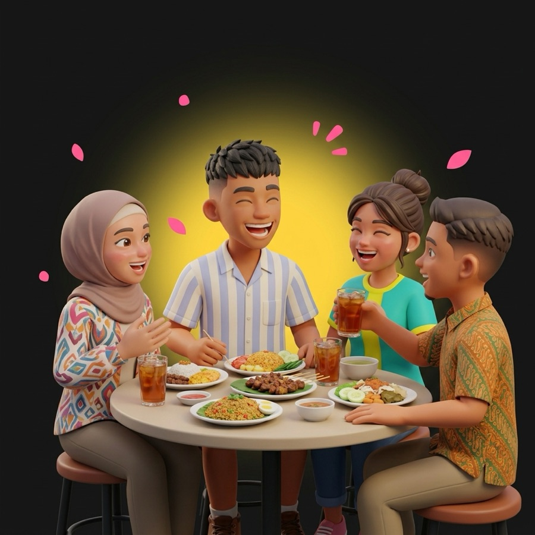
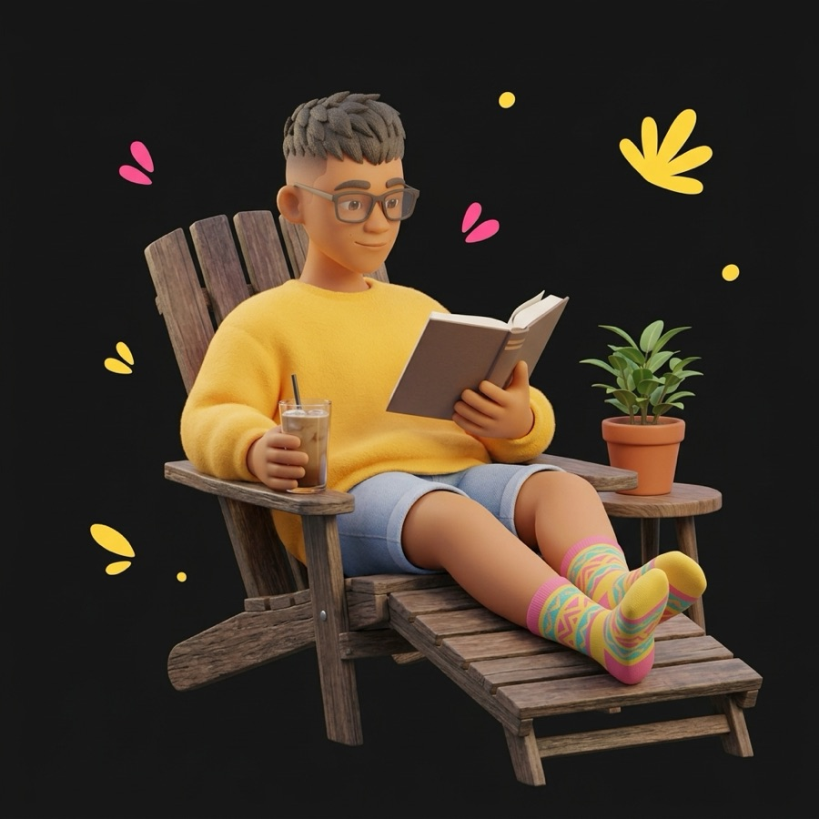
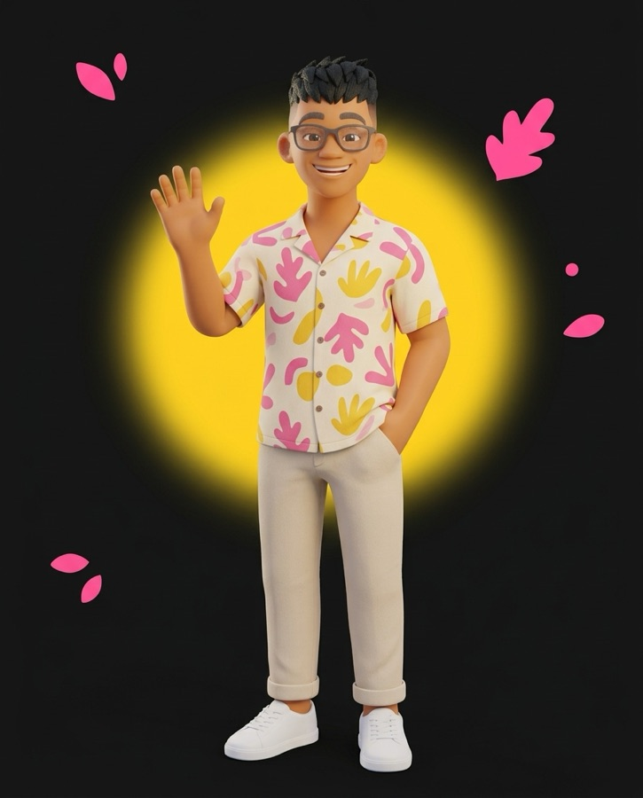

Gym and running
Gym, plus slow runs of around 5 km. I’m never fast, but I keep showing up.
I’m a Gen Z product manager. I make consumer apps easy to get started with and worth coming back to. Chill, but things get done.







Same me, different moments. Drag or use arrow keys to spin.
A little about me
I’m an Associate Product Manager at Fore Coffee, where I work on growth and retention in the consumer app. Before that I was an APM at Glints, and before that I interned as a PM at Aruna and Trans Retail. I learn by trying things. That’s how I ended up with a keyboard, a guitar and a slow 5 km habit.
Two shipped, one in progress, one side project. Each story says what I did and what happened next.
We shortened onboarding, suggested roles to start with and added One-Tap Apply, so job seekers had fewer screens in the way.
I reworked new-user vouchers with the promo team, brought OTP sign-in cost down and got TikTok Dining Go working with our POS.
I’m working on the product side of a ready-time estimate. The BI team builds the model. It hasn’t launched yet.
Claude and Codex share one memory and follow my rules. They show evidence, say when they’re unsure and wait for my OK before sending anything.
Mostly meeting strangers, or getting a bit sweaty.
Gym, plus slow runs of around 5 km. I’m never fast, but I keep showing up.
I play both, mostly pop songs with lyrics that mean something.
Most weekends I join a community where I don’t know anyone yet. That’s where I meet people who see things differently from me.
A book and an iced coffee. Yes, I know where I work.
Plus whatever AI tool dropped this week.
Before I open a dashboard, I want to know which decision the numbers are for.
A backend event can’t tell me what the customer saw, so I open the app and look.
See it in the ETA storyI’d rather flag a gap early than surprise the team at launch.
Information Technology, State Polytechnic of Jakarta (2020 to 2024). Software Engineering, CCIT Universitas Indonesia (2020 to 2022).